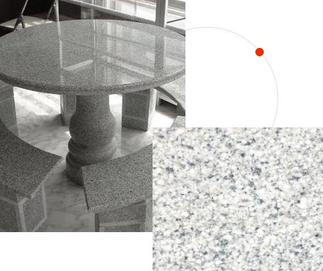

Столешница из Мансуровского гранита

от 1500 руб / м 2
Оплата
Возможны любые виды оплаты. Безналичный расчет для юридических и физических лиц.
Доставка
Стоимость доставки зависит от месторождения камня и соответствует действующим тарифам на грузоперевозки авто и ж/д транспорта. Уточняйте у менеджеров.
Гарантия качества
заказать
Вся гранитная продукция соответсвует ГОСТам 32018-2012, 23342-2012, 9480-2012, Р52875-2018. Это характеризует наш гранит как продукцию высочайшего качества.
Описание
- Вид камня: Гранит
- Вид продукции: Столешница
- Цвет: Синий, Белый
- Регион: Урал
- Месторождение: Мансуровское
Если у Вас есть планы на заказ изделия из натурального камня и вы хотите, чтобы ваш заказ был выполнен действительно качественно, изделие служило долго и надёжно, тогда к выбору компании-производителя нужно подойти с пониманием всей серьезности выбора
Характеристики камня
| Объемный вес: | 2710 кг/м3 |
| Водопоглощение: | 0,48 % |
| Пористость: | 0,74 % |
| Истираемость: | 0,4 г/см2 |
| Морозостойкость: | 100 циклов |
| Предел прочности при сжатии: | 126 (МПа) |